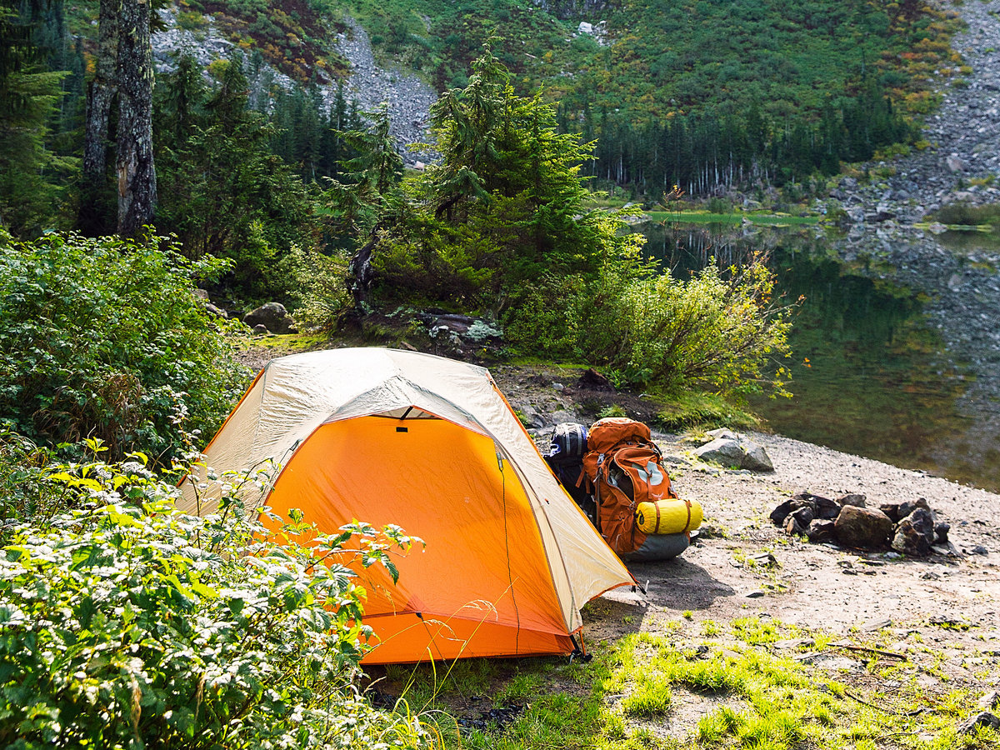

Top 5 Campgrounds in Washington State
- Sequim Bay State Park, Olympic Peninsula
- Seaquest State Park, Mt. St. Helen's
- Eightmile Campground, Leavenworth WA
- MT. Rainier National Park, Ohanapecosh or White River Campgrounds
- Owhi Campground, Cle Elum WA
For more information on Washington State Parks click here:Washington State Parks